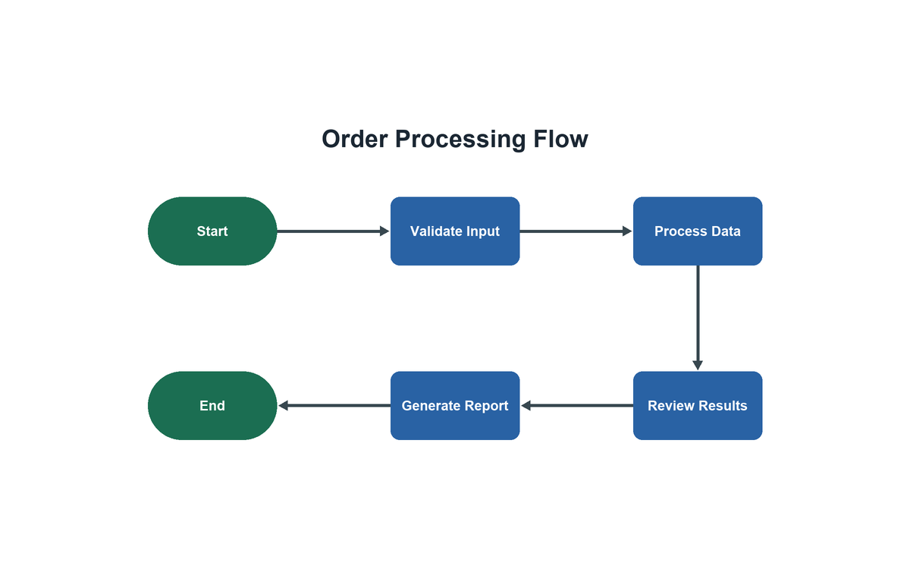

Baseline
100 / 100Expected: full credit for node coverage above 6%. Observed: 100.
Why it matters: a healthy diagram still gets full credit.
Model reasoning
The node footprint is clearly above the 6% threshold. Under the specified scoring rule, any footprint at or above 6% receives 100.